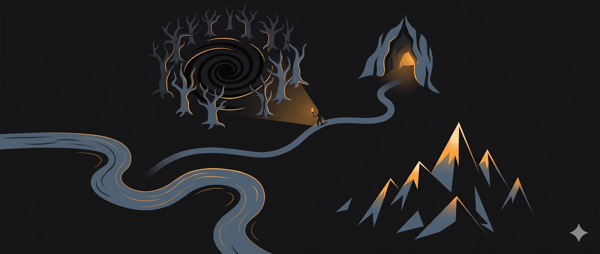

Cách sống một cuộc đời giàu tri thức
…và tại sao điều đó dễ hơn bạn nghĩ
Hãy vào trang chủ của Wikipedia.
Nhấn vào bất kỳ liên kết nào dẫn đến một bài Wikipedia. Từ trang đó, nhấn vào từ đầu tiên được gắn siêu liên kết trong phần nội dung chính. Cứ tiếp tục như vậy - hành trình của bạn sẽ trông đại khái như thế này. (Ảnh đầu tiên trong bài viết gốc)
Thử thực hiện điều này với vài trang khác nhau. Hãy chọn những chủ đề thật đa dạng, chẳng hạn Nuclear Gandhi, Cow Tipping, hay Exploding Trousers.
Tất cả chúng đều sẽ dẫn bạn đến bài Wikipedia về Triết học.
Năm 2017, ba nhà toán học từ Đại học Vermont công bố một bài nghiên cứu có tên Connecting Every Bit of Knowledge: The Structure of Wikipedia’s First Link Network (Kết nối mọi mảnh tri thức: Cấu trúc mạng liên kết đầu tiên của Wikipedia). Họ kiểm tra giả thuyết này trên tập dữ liệu gồm 4,7 triệu bài viết Wikipedia tiếng Anh và phát hiện ra rằng Triết học là trang có số lượng bài dẫn đến nhiều nhất.
95% tổng số bài viết trên Wikipedia đều dẫn về Triết học.
Lo âu là một phản ứng cảm xúc trước rủi ro. Khi ta lo âu về một sự kiện nào đó, ta nhận thức rủi ro đó là có thật, có thể xảy ra và có khả năng xảy ra trong thời gian gần.
Lo âu Nhận thức luận là cảm giác bất an, căng thẳng và lo lắng khi bạn muốn biết sự thật. Bạn lo rằng kiến thức của mình còn thiếu sót và đầy sai lầm, và rất có thể điều đó là đúng.
Bạn thiếu nguồn lực, phương pháp, hoặc quyền chủ động để tìm đến sự thật.
Lý do khiến Lo âu Nhận thức luận làm bạn khó chịu đến vậy là vì nó đối nghịch với một cảm thức phổ quát của con người: khát vọng bẩm sinh muốn tìm đến sự thật.
Trong một thế giới ngập tràn thông tin, lo âu nhận thức luận của ta đang leo thang không ngừng. Chúng ta liên tục bị bủa vây bởi quá nhiều thông tin và thông tin sai lệch, đến mức não bộ đang dần mất đi khả năng sàng lọc.
Ta không còn có thể phân tích những gì mình tiếp nhận nữa, và vì vậy, ta mặc định rơi vào các thiên kiến của mình. Ta ý thức được điều này, và đó chính là lý do ta muốn sống một cuộc đời có thể giảm bớt lo âu ấy.
Nhưng con đường đến “sự thật” là một hành trình đầy phức tạp, ngập tràn bất định và rủi ro.
Nếu muốn bước vào một hành trình trí tuệ dẫn đến “sự thật” và giúp ta giảm bớt lo âu nhận thức luận, ta cần đắm mình vào thế giới của những ý tưởng - những ý tưởng mới lạ, vượt ra ngoài những gì ta đang hiểu biết.
Nhưng trước khi lên đường cho hành trình đó, ta cần thực hiện một hành trình khác. Ngược về năm 1970, tại Đại học Cambridge.
Trò chơi Cuộc sống
John Conway là một nhà toán học người Anh, trông giống Jack Nicholson thời trẻ trong bộ phim One Flew Over the Cuckoo’s Nest (Bay trên tổ chim cúc cu). Ngoài những đóng góp cho lý thuyết nhóm hữu hạn, lý thuyết số và lý thuyết trò chơi tổ hợp, ông còn được biết đến với việc phát triển một nhánh toán học gọi là toán học giải trí (recreational mathematics).
Nói đơn giản: toán học được làm vì niềm vui (ngạc nhiên chưa!).
Năm 1970, ông phát minh ra một trò chơi có tên Conway’s Game of Life (Trò chơi Cuộc sống của Conway), và bạn cùng tôi sẽ chơi nó. Đừng lo, đây chỉ là toán học giải trí thôi.
Điều thú vị nằm ngay ở chỗ: đây là một trò chơi không có người chơi.
Khoan đã, trò chơi gì mà không có người chơi?
Đây là trò chơi mà điểm xuất phát quyết định kết quả. Và nó vận hành theo những quy tắc nhất định.
Bạn còn nhớ lần đầu tiên chạm tay vào máy tính không, có thể là ở phòng máy tính của trường, nơi mà vì lý do gì đó người ta bắt phải cởi giày trước khi vào?
Một trong những trò chơi bạn có thể đã chơi là Minesweeper (Dò mìn). Một bảng lưới lớn với các ô ẩn chứa mìn, và bạn phải nhấn chuột sao cho không kích nổ bất kỳ quả mìn nào.
Hãy hình dung một bảng lưới tương tự như vậy. Nhưng thay vì nhấn chuột, bạn tự xác định điểm xuất phát, bằng cách quyết định có bao nhiêu ô trong lưới được tô đầy.
Bạn có thể tô đầy bao nhiêu ô tùy thích. Trò chơi tiến hành theo những quy tắc sau:
-
Bất kỳ ô sống nào có ít hơn hai ô sống liền kề sẽ chết, như thể do thiếu dân số.
-
Bất kỳ ô sống nào có hai hoặc ba ô sống liền kề sẽ tiếp tục tồn tại sang thế hệ tiếp theo.
-
Bất kỳ ô sống nào có nhiều hơn ba ô sống liền kề sẽ chết, như thể do quá tải dân số.
-
Bất kỳ ô chết nào có đúng ba ô sống liền kề sẽ trở thành ô sống, như thể do sinh sản.
Bạn có thể chơi thử tại đường link bên duới phần comment. Và nếu chơi đủ lâu, với nhiều kiểu và số lượng ô khởi đầu khác nhau, một điều kỳ lạ sẽ xảy ra.
Tôi thực sự khuyến khích bạn đừng bỏ qua video (dưới phần comment), vì nó đóng vai trò trung tâm trong việc hiểu bài viết này.
Khi xem xong, ắt hẳn bạn sẽ tự hỏi “Tôi vừa thấy cái quái gì vậy?” Trò chơi Cuộc sống được ghép cùng bản nhạc chủ đề ám ảnh của bộ phim tâm lý Requiem for a Dream (Hồi ký của một giấc mơ)!
Bây giờ hãy thử tưởng tượng mỗi ô đen trong đó là một ý tưởng.
Vậy điều gì xảy ra khi bạn chỉ có vài ý tưởng? Điều gì xảy ra nếu bạn có thêm một chút nữa?
Hầu hết chúng sẽ chết.
Ngay cả khi có đủ số lượng, một khuôn mẫu sẽ nhanh chóng xuất hiện.
Khi bao quanh mình bằng quá ít ý tưởng, ta để các ý tưởng của mình chết dần. Chúng trở thành những Bức tranh tĩnh (Still Lives).
Khi bao quanh mình bằng quá nhiều ý tưởng cùng loại, ta chỉ xoay vòng lại những gì đã có. Chúng trở thành những Bộ dao động (Oscillators).
Ý tưởng của ta cần đa dạng. Ý tưởng của ta cần phong phú.
Đây không phải lý luận suông.
Conway’s Game of Life là một ví dụ về tính nổi sinh (emergence) và tự tổ chức (self-organization). Khi bao quanh mình bằng những ý tưởng phong phú và đa dạng, những ý tưởng phức tạp sẽ tự nổi sinh. Những ý tưởng này là độc nhất, không giống bất kỳ ý tưởng nào đã tạo ra chúng. Ngay cả khi tập hợp ban đầu trông có vẻ đơn giản và rời rạc, trật tự vẫn có thể tự phát xuất hiện, dẫn đến những ý tưởng xuất sắc.
Tính nổi sinh và tự tổ chức hiện diện khắp nơi xung quanh ta: trong khoa học, xã hội, nghệ thuật và tự nhiên.
Được rồi, nhưng làm thế nào để có những ý tưởng mới? Trong một cuộc sống bị định hình bởi nhịp điệu của công việc, các mối quan hệ và tắc đường, làm sao ta tìm được không gian để liên tục khám phá những ý tưởng mới lạ?
Đến Vielmere - Quê hương của Luminspire
Để hiểu điều này, ta bắt đầu một hành trình, đến thị trấn Vielmere. Tọa lạc trong một vũ trụ song song nhưng đồng thời cũng là thực tại của bạn, bạn thả neo trên bờ. Chỉ để nhận ra rằng đây không phải nơi hiếu khách gì cho lắm. Người dân địa phương không hẳn là chào đón, và họ trông mệt mỏi. Khuôn mặt họ xanh xao, đôi mắt đỏ hoe vì cam chịu, đôi vai rũ xuống. Họ ở lại thị trấn vào ban đêm, nhưng ban ngày thì chẳng thấy bóng.
Còn bạn, bạn đang tìm cách chinh phục Luminspire - Ngọn Núi Tri Thức. Truyền thuyết kể rằng những người học rộng hiểu sâu nhất trú ngụ sâu trên những ngọn núi ấy. Ẩn trong sương mù, họ chọn cuộc sống lặng lẽ và miệt mài theo đuổi lĩnh vực tri thức của mình. Họ hiếm khi xuống thị trấn, và ngay cả khi có, hầu hết mọi người đều phớt lờ họ, cũng như họ đã phớt lờ bạn.
Bạn có thể nhìn thấy những ngọn núi đó từ thị trấn, nhưng ai cũng bảo rằng để đến được đó, bạn phải băng qua Moradoom - Khu Rừng Thường Xanh của Chủ Nghĩa Tư Bản Giai Đoạn Cuối. Đó cũng là nơi cư dân của thị trấn dành phần lớn thời gian của mình.
Băng qua Moradoom - Khu Rừng Thường Xanh của Chủ Nghĩa Tư Bản Giai Đoạn Cuối
Moradoom từng là một khu rừng rụng lá theo mùa. Khoảng 50 năm trước, nó tái sinh với một loài cây khác - thông xanh, vân sam, linh sam và sồi thường xanh. Ở dạng nguyên thủy, chúng từng thực sự rụng lá theo mùa - thay đổi theo chu kỳ. Cây, bụi cây và cây thân thảo lâu năm sẽ rụng hết lá trong một khoảng trong năm. Sự rụng lá này chịu sự chi phối của tổ hợp giữa ánh sáng ban ngày và nhiệt độ không khí. Nhiều loài cây rụng lá nở hoa ngay trong giai đoạn không có lá, vì điều đó làm tăng hiệu quả thụ phấn. Sự vắng mặt của lá giúp gió truyền phấn hoa tốt hơn với các loài thụ phấn nhờ gió, và làm tăng khả năng côn trùng nhìn thấy hoa với các loài thụ phấn nhờ côn trùng.
Đáng tiếc, những cây thường xanh xâm chiếm Moradoom đã mang lại những hệ quả lẫn lộn. Hai kiểu cây xuất hiện:
Cây Rụng Lá Nuôi Dưỡng: Loại cây cho quả cách năm, tỏa bóng mát quanh năm và cung cấp củi vào cuối đời. Chúng e dè phủ tán (canopy shy), lớn chậm, và nếu được sống tự nhiên, sẽ có cuộc đời dài khỏe mạnh, nuôi dưỡng cả người lẫn thú.
Cây Thường Xanh Nuốt Chửng: Những cây này lớn đến kích thước khổng lồ, vượt xa cả cây Redwood Bắc Mỹ. Chúng cho quả liên tục nhưng hiếm khi tỏa bóng. Chúng lớn nhanh, là nguồn củi vô tận, và mọc sát nhau đến mức tán cây hòa vào nhau. Từ đó, chúng chắn ánh sáng mặt trời hiệu quả đến mức cả khu rừng chìm trong bóng tối. Chúng làm cuộc cạnh tranh về ánh sáng, nước và dưỡng chất ngày càng căng thẳng, từ đó tước đoạt nguồn tài nguyên mà những cây nuôi dưỡng cần. Chúng thúc đẩy sự lây lan của bệnh tật, dẫn đến sự tàn lụi của những thảm thực vật nhỏ sát mặt đất như bụi cây và cỏ.
Và chúng nuốt chửng cả cuộc đời con người - cả thể xác lẫn tinh thần.
Bản chất công việc của ta giống như đang băng qua Moradoom. Những cây nuốt chửng cao đến mức ta không thể trèo lên, và vì vậy ta không thể chạm tới ánh sáng mặt trời. Chúng mọc dày đặc đến mức cố chen qua chỉ có nghĩa là ngã, đau và trầy xước.
“Trong quá trình nuôi những cây này, ta hi sinh cả thân xác lẫn tâm trí. Chúng đòi hỏi không ngừng - luôn muốn nhiều hơn, và mỗi lần ta cho thêm, ta lại bị gán nhãn là người có thể vắt thêm.
Cái giá của trái cây thường xanh ấy được trả bằng sự bóc lột ngày càng tăng đối với thời gian rảnh của ta. Ta nuôi dưỡng những cây này bằng nước mắt của những giấc mơ đã chết và nấm mồ của những mối quan hệ.
Và thứ quả duy nhất bạn nhận được là thứ rơi xuống đất - một sự an ủi được ngụy trang thành phần thưởng.”
Thật dễ để mắc kẹt trong Moradoom. Rất có thể, nếu bạn đã đọc đến đây, cả bạn lẫn tôi đều đang mắc kẹt trong đó. Thường phải mất hàng thập kỷ ta mới thoát ra được, nhưng đến lúc đó ta đã đánh mất những năm tháng đẹp nhất để đuổi theo thứ quả an ủi ấy. Mỗi ngày ta dành thời gian trong Moradoom rồi trở về nhà vào ban đêm. Thứ lẽ ra phải là nơi trú ẩn khỏi sự bạo ngược của khu rừng lại trở thành chiếc lồng. Ta trả những chi phí cảm xúc và tiền bạc ngày càng cao hơn để duy trì những chiếc lồng này - tiền thuê nhà luôn tăng, các khoản trả góp chẳng bao giờ kết thúc, và lúc nào cũng có thứ gì đó cần sửa trong nhà. Còn lại bao nhiêu, ta đốt hết vào vòng xoáy vô nghĩa của việc nâng cấp - những thứ ta mua để gây ấn tượng với những người chẳng quan tâm đến ta. Hay tệ hơn, để gây ấn tượng với chính mình.
Nhưng có một con đường thoát khỏi Moradoom, có một cách để tìm thêm những cây rụng lá nuôi dưỡng, có một cách để chặt bỏ những cây thường xanh nuốt chửng.
Chiếc Rìu của Sự Thỏa Mãn.
Tháng 8 năm 2018, trong tháng cuối của kỳ nghỉ sabbatical ba tháng, tôi đến làng Hamta ở Himachal Pradesh. Tôi thuê một căn nhà một phòng, và những người chăm sóc tôi là Dì Dolma và Chú Kalzang, một đôi vợ chồng đã ngoài bảy mươi. Trong khi một vài du khách như tôi đến rồi đi, người bạn đồng hành thường trực của họ là chú chó núi Rambo, không may bị mù tuyết. Chú và Dì thường nấu ăn cho tôi, và họ cũng trở thành bạn đồng hành của tôi.
Dì Dolma và tôi dần đi vào một nhịp sống quen thuộc. Tôi sẽ đi bộ lên quán dhaba, men theo một con đường mòn (pagdandi) nằm giữa những hàng táo và mơ. Đó là mùa mưa, cả ngọn núi xanh mướt, với những bông hoa dại điểm tô thêm vẻ đẹp của núi non. Những bông hoa dại trắng là thứ tôi yêu thích nhất - tôi thích đứng ngắm chúng, còn Rambo già thì thích dụi mũi vào chúng và hít hà.
Buổi sáng của tôi bắt đầu với tách trà pahadi ngọt ngào cùng Dì, khi hai dì cháu ngồi thảnh thơi bên ngoài quán, làm một việc mà chỉ người miền núi mới thực sự thạo - Dhoop Sekana. Một thực hành mà ta đang dần đánh mất trong cuộc sống đô thị. Tôi thấy khó dịch Dhoop Sekana là gì - nhưng hãy thử tưởng tượng bạn ngồi trên một chiếc chiếu hay một chiếc ghế trong tiết trời se lạnh, trên hiên nhà hoặc trên sân thượng. Trời vừa sáng, mặt trời vừa lên, nhẹ nhàng bắt đầu sưởi ấm cơ thể bạn. Bạn được bao bọc bởi sự yên tĩnh tứ phía, thỉnh thoảng bị phá vỡ bởi tiếng chim gọi nhau. Một cảm giác ấm áp dần dần hình thành. Thời gian trôi qua thong thả, và bạn ngồi đó không một mối lo.
Trong lúc nhấp trà, tôi hay trò chuyện với Dì. Dì tò mò về cuộc đời tôi - về việc rời xa nhà để học hành và làm việc, về cách tôi liên tục chuyển thành phố mỗi vài năm. Về việc nhà không bao giờ là một nơi chốn, mà là những người quan trọng trong cuộc đời tôi. Ngược lại, tôi ngạc nhiên trước cách họ dường như sống hoàn toàn từ mảnh đất của mình và hạnh phúc với quá ít ỏi đến vậy.
Và khi tôi nói điều đó với Dì, Dì nhìn tôi với vẻ bối rối và hỏi: “Tại sao cháu nghĩ dì có quá ít? Dì có tất cả những gì dì cần.”
Tôi ngạc nhiên và nói - Cháu chắc rằng Dì vẫn có thể cần thêm vài thứ nữa, thêm vài tiện nghi sẽ làm cuộc sống dễ dàng hơn. Và sẽ khiến Dì hạnh phúc hơn nữa.
Và theo cách tự nhiên nhất, Dì nói - Main santusht hoon (Dì thỏa mãn rồi).
“Một tháng sống giản dị trên dãy Himalaya đã dạy tôi tầm quan trọng của sự thỏa mãn. Tôi sống trong một căn nhà một phòng, với một tấm nệm đơn, một chiếc ghế và một giá sách. Một bóng đèn duy nhất thắp sáng căn phòng, và mất điện là chuyện bình thường.
Dù đã quen với những tiện nghi của cuộc sống đô thị, tôi chỉ mất vài ngày để hòa vào nhịp sống mới. Ngoài những ngày đầu khó khăn với sự thay đổi đột ngột ấy, tôi dần tìm được sự bình thản trong nhịp sống chậm rãi nơi đây.
Và cũng dễ dàng như vậy, khi trở về cuộc sống thường nhật, tôi trượt ngay về những thói quen cũ, không thể thoát khỏi những nếp sinh hoạt không lành mạnh của mình - nhưng đâu đó, giọng nói của Dì Dolma vẫn vang vọng trong đầu tôi.”
Ta cần Lưỡi Rìu của Sự Thỏa Mãn để chặt qua những Cây Thường Xanh Nuốt Chửng. Khát vọng thường xanh của chúng trong việc bóc lột ta chỉ tương xứng với khát vọng thường xanh của ta trong việc buông mình cho chúng. Bộ phim tài liệu Netflix Buy Now! The Shopping Conspiracy (Mua Ngay! Âm Mưu Tiêu Dùng) cho ta thấy hành vi này đang gây tổn hại sâu sắc đến thế giới ta đang sống.
Bởi vì ngay khoảnh khắc ta tìm được cảm giác thỏa mãn, nhu cầu nâng cao địa vị thông qua việc tiêu thụ thái quá hàng hóa và trải nghiệm sẽ giảm đi. Ta sẽ không còn lo âu địa vị (status anxiety) nữa, và ta sẽ bớt bận tâm hơn rất nhiều về cách thế giới nhìn nhận mình.
Nhưng ngay cả khi ta đã chặt qua Moradoom và bước ra với một nhận thức rõ ràng về điều gì thực sự thỏa mãn mình, ta vẫn sẽ gặp phải một thách thức khác.
Đến Igamor - Những Hang Động Mê Hoặc của Sự Vô Minh
Hãy dừng lại một chút và nhìn lại cuộc đời mình. Nghĩ về nơi bạn lớn lên, những người đã định hình bạn thuở ban đầu, những trường học và đại học bạn từng theo học, những công việc bạn đã làm. Nhớ lại những người đã đi ngang cuộc đời bạn - một số ở lại, nhưng phần lớn đã rời đi.
Nếu bạn có trải nghiệm điển hình của một Millennial như tôi, bạn đã sống qua một trong những giai đoạn thay đổi nhanh nhất trong lịch sử loài người. Ta nhảy vọt từ kỷ nguyên công nghiệp sang kỷ nguyên thông tin rồi đến “cái mớ hỗn độn ta đang sống này” - chưa ai đặt tên được cho nó. Với tư cách là con người, ta đã trở thành một lực lượng biến đổi hành tinh đến mức các nhà khoa học đang tranh luận xem có nên đặt tên cho nó là một kỷ địa chất hoàn toàn mới gọi là Anthropocene (Kỷ Nhân Sinh) hay không.
Sự thay đổi nhanh chóng cũng kéo theo những biến động xã hội xung quanh các trụ cột định hình xã hội hiện đại: giới tính, chủng tộc và tôn giáo. Gần hơn, ta đang sống ở một đất nước nơi phụ nữ trẻ ngày càng trở nên tự do hơn trong khi đàn ông trẻ lại ngả về phía bảo thủ hơn, và ngay trong điều đó, miền Bắc-Trung và miền Nam Ấn Độ cũng khác nhau. Đàn ông ngày càng khó tìm và lý giải vị trí của mình trong thế giới này, và nam tính có nghĩa là gì. Tôn giáo là điểm căng thẳng trung tâm trong chính trị Ấn Độ, và những mâu thuẫn giai cấp và đẳng cấp của ta vẫn chưa có lối ra. Ngay cả khi chỉ xét đến tầng lớp tinh hoa đô thị Ấn Độ - những người như bạn và tôi, được cách ly khỏi “Phần còn lại của Ấn Độ” - lo âu kinh tế vẫn đang bóp nghẹt. Millennial Ấn Độ ngày nay đang sống dưới The Great Squeeze (Gọng Kìm Lớn). Ta bị thúc ép phải đạt được tất cả trong một khoảng thời gian ngắn, và tập trung cao độ vào các mục tiêu của mình - những mục tiêu đang nghiền nát ta cả về thể chất, cảm xúc lẫn kinh tế.
Giữa tất cả những điều đó, ta phải dung hòa những gì ta biết (những thứ học được khi lớn lên) với thông tin mới liên tục xuất hiện trước mắt. Nhưng thông tin mới đến dưới dạng một cơn lũ - quá nhiều, quá phức tạp và quá dày đặc để tiêu hóa. Vậy ta làm gì?
Triết gia Hy Lạp Plato đã nắm bắt được tình huống nan giải này rất rõ, qua điều được gọi là Allegory of the Cave (Ẩn dụ Cái Hang).¹
Hãy tưởng tượng một cái hang nơi những người đã bị giam cầm từ thuở ấu thơ. Những tù nhân này bị xiềng xích sao cho chân và cổ cố định, buộc họ phải nhìn chằm chằm vào bức tường trước mặt, không thể quay đầu nhìn quanh hang, nhìn nhau, hay nhìn chính mình.
Phía sau những tù nhân là một đống lửa, và giữa ngọn lửa với họ là một lối đi nâng cao với bức tường thấp, phía sau đó có người đi lại mang theo các vật thể hoặc hình nộm “của người và các sinh vật sống khác.”
Những người đó đi sau bức tường để thân thể họ không tạo ra bóng cho tù nhân nhìn thấy, nhưng những vật họ mang thì có. Tù nhân không thể thấy bất cứ điều gì đang xảy ra phía sau - họ chỉ có thể nhìn thấy những cái bóng chiếu lên bức tường hang trước mặt. Âm thanh của những người đang nói chuyện vang vọng qua các bức tường; tù nhân tin rằng những âm thanh đó phát ra từ những cái bóng.
Những cái bóng trở thành hiện thực.
Bây giờ hãy giả sử người tù được thả ra. Người tù vừa được giải phóng sẽ nhìn quanh và thấy ngọn lửa. Ánh sáng sẽ làm đau mắt anh ta và khiến anh ta khó nhìn thấy những vật thể đang tạo ra những cái bóng. Nếu được nói rằng những gì anh ta đang thấy mới là thực tại, thay vì phiên bản thực tại anh ta thấy trên bức tường, anh ta sẽ không tin.
Đối diện với nỗi đau đó, người tù sẽ quay đầu và chạy trở về những gì anh ta quen thuộc.
Khi đối mặt với điều gì đó thực sự thách thức thế giới quan của mình, ta chọn sự vô minh.
Chỉ quan tâm đến những thứ ảnh hưởng trực tiếp đến ta. Chỉ tiêu thụ những gì các giác quan có thể dễ dàng cảm nhận.
Ta rút lui về những gì ta biết, ta quay về với những thiên kiến của mình. Ta biến sự vô minh vốn quen thuộc thành nguồn gốc của chân lý.
Và ở trung tâm của nó, sự vô minh này thật mất phương hướng.
Vậy làm thế nào để thoát khỏi cái hang?
Plato tin rằng con đường duy nhất để thoát khỏi cái hang là không đặt cảm giác lên trên tư tưởng.
Trong thế giới bị ám ảnh bởi việc tiêu thụ trải nghiệm và vật chất, ta đã đặt “cảm giác” lên bệ thờ, biến nó thành dấu hiệu của một cuộc đời đáng sống.
Ta trân trọng những thứ thu hút mắt, mũi, lưỡi và tai. Hơn hết, ta ưu tiên những thứ được cơ thể cảm nhận tốt nhất.
Plato nói rằng chính ý tưởng - chứ không phải thế giới vật chất mà ta biết qua cảm giác - mới sở hữu loại thực tại cao nhất và nền tảng nhất.
Cách đơn giản nhất để đưa ý tưởng trở thành trung tâm cuộc sống, bước nhỏ nhất ta có thể thực hiện để thoát khỏi những hang động mê hoặc của sự vô minh, là xóa tan bóng tối của những cái hang ấy bằng Ngọn Đuốc của Sự Tò Mò.
Người Phụ Nữ Cứu Sống Một Tỷ Người
Nếu bạn du hành thời gian đến năm 1923, cụ thể là đến thị trấn ven biển Worthing ở West Sussex, Anh, bạn sẽ thấy hai cô bé đang loay hoay với bộ dụng cụ phân tích khoáng chất di động của mình. Niềm đam mê của họ là những viên đá cuội - và không hoàn toàn là ngẫu nhiên, bởi cha mẹ họ là những nhà khảo cổ học ở Ai Cập. Một trong hai cô bé tên là Dorothy, và năm 1928, cô theo cha mẹ đến địa điểm khai quật Jerash ở Jordan ngày nay, nơi cô ghi chép lại các hoa văn khảm từ nhiều nhà thờ thời Byzantine có niên đại từ thế kỷ 5-6.
Cô dành hơn một năm để hoàn thành những bản vẽ đó trong khi bắt đầu học tại Oxford, đồng thời tiến hành phân tích hóa học các mảnh kính tesserae từ cùng địa điểm. Cô đã phát triển một niềm đam mê sâu sắc với hóa học, đến mức vào sinh nhật lần thứ 16, mẹ cô tặng cho cô một cuốn sách của WH Bragg về tinh thể học tia X (X-ray crystallography), Concerning the Nature of Things (Về Bản Chất của Vạn Vật).
Cuốn sách này đóng vai trò then chốt đối với những mối quan tâm sau này của cô. Năm 1932, Dorothy Hodgkin bắt đầu chương trình tiến sĩ tại Cambridge, và chính lúc đó cô nhận ra tiềm năng của tinh thể học tia X trong việc xác định cấu trúc protein. Sự tò mò không bao giờ tắt của cô về cấu trúc của vạn vật - từ đá cuội đến protein - đã tìm được chất xúc tác sẽ sớm định hình thế giới hiện đại: tinh thể học tia X.
Năm 1945, Hodgkin và các cộng sự, trong đó có nhà hóa sinh Barbara Low, giải mã được cấu trúc của Penicillin - một kết quả đi ngược lại toàn bộ hiểu biết đương thời về loại kháng sinh này.
Năm 1948, Hodgkin lần đầu tiên tiếp cận một trong những loại vitamin có cấu trúc phức tạp nhất mà nền văn minh từng biết đến. Vào thời điểm đó, cấu trúc của nó gần như hoàn toàn chưa được biết, và khi Hodgkin phát hiện ra nó chứa cobalt, bà nhận ra cấu trúc thực có thể được xác định qua phân tích tinh thể học tia X. Nghiên cứu do Hodgkin công bố được mô tả là có tầm quan trọng “như việc phá vỡ rào cản âm thanh”. Loại vitamin đó tầng lớp tinh hoa đô thị Ấn Độ biết rất rõ, vì rất nhiều trong số ta đang thiếu nó - Vitamin B12.
Nhưng vinh quang đỉnh cao của cuộc đời bà đến sau một cuộc chiến kéo dài ba thập kỷ, bắt đầu từ năm 1934.
Nhà hóa học hữu cơ người Anh Robert Robinson đã tặng Dorothy một mẫu nhỏ của một hormone dạng tinh thể. Hormone này thu hút trí tưởng tượng của bà vì những tác động phức tạp và rộng khắp của nó trong cơ thể. Tuy nhiên, lúc bấy giờ tinh thể học tia X chưa phát triển đủ để xử lý độ phức tạp của phân tử này. Bà và nhiều người khác đã dành nhiều năm cải tiến kỹ thuật.
Phải mất 35 năm kể từ khi chụp bức ảnh tinh thể đầu tiên, tinh thể học tia X và các kỹ thuật tính toán mới đủ sức xử lý những phân tử lớn hơn và phức tạp hơn. Giấc mơ của Hodgkin về việc giải mã cấu trúc của hormone đó bị gác lại mãi đến năm 1969, khi bà cuối cùng có thể làm việc cùng đội ngũ các nhà khoa học trẻ quốc tế để lần đầu tiên làm sáng tỏ cấu trúc của nó. Hormone mà ngày nay tất cả chúng ta đều biết quá rõ.
Insulin
Công trình của Hodgkin với insulin đóng vai trò then chốt trong việc mở đường cho insulin được sản xuất đại trà và sử dụng rộng rãi trong điều trị cả tiểu đường Type I lẫn Type II.
Dorothy Hodgkin đã đi từ việc nghiên cứu những viên đá cuội trong suối đến việc khám phá và hiểu được bản chất của penicillin, vitamin B12 và insulin.
Những công trình ấy đã cứu sống một tỷ người một cách dễ dàng.
Tất cả được thúc đẩy bởi việc cầm trên tay Ngọn Đuốc của Sự Tò Mò.
Hodgkin đã giải quyết sự vô minh của bản thân - và của chúng ta - bằng cách không ngừng sử dụng ngọn đuốc tò mò. Và tôi sẵn sàng đặt cược rằng nếu bạn đã nhấp vào bài viết này và vẫn đang đọc đến đây, bạn là một người tò mò.
Vậy hãy tạm giả định rằng bạn không chỉ đã chặt qua Moradoom - Khu Rừng Thường Xanh của Chủ Nghĩa Tư Bản Giai Đoạn Cuối, mà còn thoát khỏi Igamor - Những Hang Động Mê Hoặc của Sự Vô Minh.
Nhưng bạn ơi, bây giờ bạn đang bị mắc kẹt ngay giữa Evermore.
Băng qua Evermore - Dòng Sông Trách Nhiệm
Năm 2013, Yitang Zhang, một cựu kế toán từng làm việc tại một cửa hàng nhượng quyền Subway, gọi điện cho vợ. “Hãy chú ý đến truyền thông và báo chí,” ông nói. “Em có thể sẽ thấy tên anh.”
Và bà ấy nói:
“Anh say rượu à?”
Bạn không nên trách vợ Zhang. Hầu như mọi người đàn ông trên trái đất này đều nghĩ rằng suy nghĩ và ý tưởng của mình là thiên tài. Tôi không có dữ liệu để chứng minh điều này, nhưng tôi có linh cảm mạnh mẽ rằng nhiều phụ nữ sẽ đồng ý.
Zhang gặp vợ tại một nhà hàng Trung Hoa ở Long Island, New York, nơi bà làm phục vụ. Ông sinh ra ở Thượng Hải năm 1955. Mẹ ông là thư ký tại một văn phòng chính phủ, cha ông là giáo sư đại học chuyên ngành kỹ thuật điện. Từ nhỏ, ông đã bắt đầu “cố gắng hiểu tất cả mọi thứ trong toán học,” ông kể. “Tôi trở nên rất khát khao toán học.”
Cha mẹ ông chuyển đến Bắc Kinh làm việc, còn Zhang ở lại Thượng Hải với bà nội. Cách mạng Văn hóa của Mao đã đóng cửa các trường học. Ông dành phần lớn thời gian đọc những cuốn sách toán mà ông đặt mua từ hiệu sách với giá chưa đến một đô la.
Cuối cùng, Zhang chuyển đến Bắc Kinh để học tại Đại học Bắc Kinh, trường được kính trọng nhất của Trung Quốc, rồi sau đó đến Đại học Purdue để làm tiến sĩ. Ông nhận bằng tiến sĩ năm 1991, rồi biến mất khỏi bức tranh toán học.
Ông sống, đôi khi ở nhờ bạn bè, tại Lexington, Kentucky, nơi ông làm việc thời vụ tại một nhà nghỉ, và tại New York City, nơi ông cũng có bạn bè và việc làm thời vụ. Zhang tìm được việc làm sổ sách kế toán tại một cửa hàng nhượng quyền Subway. Khi không làm việc, ông đến thư viện của Đại học Kentucky để đọc các tạp chí về hình học đại số và lý thuyết số. “Nhiều năm liền, tôi thực sự không duy trì được giấc mơ toán học của mình,” ông nói.
Năm 1999, nhờ sự giúp đỡ của một người bạn, ông có được một vị trí giảng dạy tại Đại học New Hampshire. Ông vẫn là một cái tên vô danh trong thế giới toán học.
Ông thuê một căn hộ cách khuôn viên trường khoảng sáu cây số và đi lại giữa nhà và văn phòng cùng sinh viên trên xe buýt của trường. Ông nói rằng ông thích ngồi trên xe buýt và suy nghĩ.
Bảy ngày một tuần, ông đến văn phòng vào khoảng tám, chín giờ sáng và ở lại đến sáu, bảy giờ tối. Thời gian nghỉ dài nhất của ông là hai tuần. Đôi khi ông thức dậy vào buổi sáng và vẫn đang suy nghĩ về một bài toán mà ông đang cân nhắc khi đi ngủ. Bên ngoài văn phòng của ông là một hành lang dài mà ông thích đi đi lại lại. Ngoài ra, ông đi bộ bên ngoài.³
Người đàn ông này coi trọng thói quen của mình hơn hầu hết chúng ta.
Và bạn sẽ hỏi, có gì đáng chú ý ở đó?
Điều đáng chú ý là cuộc gọi cho vợ không phải là một cú điện thoại say rượu. Ông nói thật.
Ngày 17 tháng 4 năm 2013, không báo trước với ai, ông gửi một bài báo đến Annals of Mathematics, tạp chí được xem là uy tín nhất trong giới toán học. Khi các nhà phản biện hoàn thành đánh giá, họ phản hồi như sau:
“Chúng tôi đã hoàn thành nghiên cứu bài báo ‘Bounded Gaps Between Primes’ (Khoảng Cách Giới Hạn Giữa Các Số Nguyên Tố) của Yitang Zhang.” Họ tiếp tục: “Các kết quả chính thuộc hạng nhất. Tác giả đã thành công trong việc chứng minh một định lý mang tính bước ngoặt trong phân phối số nguyên tố.” Và: “Mặc dù chúng tôi nghiên cứu các lập luận rất kỹ lưỡng, chúng tôi thấy rất khó để phát hiện dù chỉ một sai sót nhỏ nhất… Chúng tôi rất vui mừng được khuyến nghị mạnh mẽ việc chấp nhận bài báo để đăng trên Annals.”⁴
Bài báo của ông là một cuộc tấn công vòng vèo vào Giả thuyết Số Nguyên Tố Song Sinh, một trong những bài toán mở vĩ đại nhất trong lịch sử toán học. Giả thuyết này khẳng định rằng có vô số cặp số nguyên tố chỉ cách nhau đúng hai đơn vị (hãy nghĩ đến 5 và 7, 11 và 13 - khoảng cách luôn là 2). Những cặp như vậy xuất hiện thường xuyên hơn ở đầu trục số và thưa dần khi số càng lớn.
Kết quả của Zhang không chứng minh rằng có vô số số nguyên tố song sinh; thay vào đó, nó đưa ra một cận trên hữu hạn là 70 triệu - giới hạn mà khoảng cách giữa các cặp số nguyên tố vẫn xuất hiện vô hạn lần.
Bạn sẽ nói: to tát gì. Khoảng cách giữa 2 (giả thuyết) và 70 triệu (những gì Zhang chứng minh) là hệ số 35 triệu. Nhưng điều ta bỏ qua là kết quả này tốt hơn vô hạn lần so với khoảng cách giữa 2 và vô cực. Những người đã tiến gần nhất đến việc chứng minh giả thuyết số nguyên tố song sinh đã nói như thế này:
“Những gì Zhang làm thật phi thường. Công trình của ông là một kiệt tác. Khi nói về lý thuyết số, phần lớn vẻ đẹp nằm ở bộ máy tư duy. Zhang bằng cách nào đó đã hiểu hoàn toàn tình huống, dù ông làm việc một mình. Đó là cách ông khiến chúng tôi ngạc nhiên.”
“Được viết với sự rõ ràng như pha lê và sự nắm bắt hoàn toàn về trạng thái hiện tại của chủ đề, ông đã chứng minh một trong những kết quả vĩ đại trong lịch sử lý thuyết số.”
“Ông không phải chuyên gia được biết đến, nhưng ông đã thành công ở nơi tất cả các chuyên gia đều thất bại.”
Zhang là ví dụ điển hình về sức mạnh của thói quen. Ngay cả trong sự vô danh toán học, ông vẫn đều đặn đến thư viện và theo dõi những phát triển trong hình học đại số và lý thuyết số. Ông làm việc mỗi ngày - cùng giờ giấc, cùng địa điểm, với rất ít hoặc không có gì thay đổi trong thói quen. Zhang đã hoàn thành “Bounded Gaps Between Primes” vào cuối năm 2012, rồi dành thêm vài tháng kiểm tra từng bước một cách có hệ thống - điều mà ông nói là “rất nhàm chán.”
Công trình của Zhang chưa bao giờ là về hustle culture (văn hoá hối hả) đang bao vây và nuốt chửng ta, giống như những cây thường xanh của Moradoom. Thói quen của ông là một bài thơ đẹp, súc tích với một thông điệp rõ ràng: Sự kiên định hơn những tia sáng thiên tài. Khả năng tái diễn hơn là thiên tài bột phát.
Trong cuộc đời, tất cả ta đều đang lội qua Evermore - Dòng Sông Trách Nhiệm. Tại bất kỳ thời điểm nào, hàng triệu thứ đang chạy trong đầu ta, và nếu bạn là phụ nữ thì lại càng nhiều hơn. Từ con cái đến tiền bạc đến sửa bình nước nóng, đến câu hỏi tồi tệ nhất mà mọi người lớn đều phải trả lời: “Hôm nay chúng ta ăn gì?”
Để băng qua dòng sông trách nhiệm, ta cần
Mái Chèo Thói Quen.
Băng qua dòng sông trách nhiệm đòi hỏi sự khéo léo - ta không thể đi ngược dòng quá lâu. Khi con cái cần sự hiện diện của bạn theo một cách thực sự có ý nghĩa, bạn cần có mặt. Khi deadline thuyết trình đang cận kề, bạn cần tập trung và hoàn thành công việc. Nhưng nếu ta dừng lại và quan sát nhịp điệu của cuộc đời mình, ta sẽ nhận ra những khuôn mẫu - trách nhiệm tích tụ như thế nào vào những thời điểm nhất định trong ngày, tuần, tháng hay năm. Cách ta liên tục đưa ra những lựa chọn tệ có thể đoán trước, những quyết định không tối ưu lặp đi lặp lại.
Tất cả những điều này đều có thể được điều hướng bằng mái chèo thói quen.
Thói quen tuyệt vời ở một điểm duy nhất: chúng loại bỏ nhu cầu phải đưa ra quyết định. Những quyết định về những việc tầm thường, cần được thực hiện trong thời gian ngắn. Bộ não đói dopamine và đầy căng thẳng của ta đang bị yêu cầu làm quá nhiều, quá thường xuyên. Một thói quen được xây dựng cẩn thận sẽ giải phóng cả thời gian thực tế lẫn không gian tinh thần, tạo điều kiện cho sự tò mò của ta phát triển.
Bởi vì sau khi chặt qua Moradoom bằng Rìu Thỏa Mãn, thoát khỏi Igamor bằng Ngọn Đuốc Tò Mò và băng qua Evermore bằng Mái Chèo Thói Quen, ta cuối cùng đến được điểm xuất phát của hành trình đích thực.
Đến Luminspire - Những Ngọn Núi Tri Thức
Bạn đã ở đây. Và trước mắt là cả một dãy núi. Nhìn xa đến đâu, bạn cũng thấy những đỉnh núi nối tiếp nhau. Nhìn quanh, bạn nhận ra mình đang đứng trên một đỉnh núi. Bạn đã đến đây bằng cách nào?
Bằng cách làm những gì bạn đã làm trong nhiều năm. Mỗi người trong chúng ta, dù vô tình hay có chủ đích, đã chọn một sự nghiệp hoặc một lĩnh vực để làm việc. Qua quá trình làm việc với vô số người, khách hàng và đối tác trong lĩnh vực đó, bạn đã phát triển một chuyên môn trong đó. Đến mức nó trở nên tự nhiên với bạn, và đôi khi bạn quên rằng đây là một kỹ năng có giá trị. Bạn sử dụng nó một cách dễ dàng trong công việc và tư vấn cho những người trẻ đang cố gắng trau dồi kiến thức trong lĩnh vực này. Kỹ năng của bạn tạo ra tác động đáng kể, và bạn xứng đáng là một chuyên gia trong không gian đó.
Và khi đứng trên đỉnh, bạn nhận ra rằng những chuyên gia khác đang đứng trên những đỉnh khác. Những đỉnh núi bạn biết đôi chút, những đỉnh bạn mới chỉ nghe tên, và những đỉnh bạn còn chưa biết là tồn tại. Bạn cố hét to để giao tiếp với họ, nhưng họ không nghe thấy. Giọng bạn chỉ vang vọng lại, dội lên từ bề mặt núi. Bạn muốn đến đỉnh núi khác, trò chuyện với chuyên gia đang đứng ở đó. Bạn muốn giao tiếp và học hỏi từ họ, nhưng điều đó đòi hỏi bạn phải làm một điều khó khăn.
Bước xuống khỏi đỉnh của mình.
Bởi vì bước xuống có nghĩa là chịu đựng sự bất an khi từ bỏ mọi quan niệm về tri thức, và sẵn sàng trở thành một học trò một lần nữa. Bạn sẽ phải chấp nhận rằng mình không biết gì về đỉnh núi mới này.
Thomas Szasz, nhà tâm thần học người Mỹ gốc Hungary, từng nhận xét:
“Mọi hành động học hỏi có ý thức đều đòi hỏi sự sẵn sàng chịu đựng một tổn thương đối với lòng tự trọng của bản thân.
Đó là lý do tại sao trẻ em, trước khi ý thức được tầm quan trọng của bản thân, học rất dễ; và tại sao người lớn tuổi hơn, đặc biệt nếu tự phụ hoặc quan trọng hóa bản thân, lại không thể học gì cả.”
Tất cả chúng ta đều cần bước xuống khỏi đỉnh của mình. Để thực sự học được điều gì đó, ta cần từ bỏ những quan điểm của mình về nó. Bởi vì hành động bước xuống khỏi đỉnh buộc ta phải làm ba việc:
Hiểu giới hạn của tư duy: Khi bước xuống và gột bỏ những quan điểm của mình, ta bắt đầu nhìn lĩnh vực tri thức của mình một cách khách quan hơn, và nhận ra rằng tư duy của ta có giới hạn, dù ta là chuyên gia.
Mở ra không gian suy tư: Khi đã bước xuống và bắt đầu đi về phía đỉnh khác, ta bước đi - và chính sự bước đi đó mở ra không gian cho sự chiêm nghiệm.
Tách mình khỏi cái tôi: Khi đã gột bỏ quan điểm và chiêm nghiệm xong, ta tách mình khỏi cái tôi của mình. Hành động tách biệt này làm ta khiêm nhường hơn, giúp ta nhận ra những sai lầm của mình và nhìn thấy những ảo tưởng mà ta đã sống trong đó.
Và một khi làm được điều đó, bạn có thể đặt mình vào một con đường mà Paul Erdős đã đi trong nhiều thập kỷ.
Paul Erdős - Nhà Toán Học Có Ảnh Hưởng Nhất Thế Giới Mà Bạn Chưa Từng Nghe Đến
Hãy tưởng tượng bạn làm việc hăng say và cộng tác rộng rãi đến mức cộng đồng toán học cùng nhau đặt tên một con số theo tên bạn - Erdős number (số Erdős). Không phải loại hằng số ta phải thuộc lòng trong vật lý và hóa học. Không phải số Avogadro hay giá trị gia tốc trọng trường trên bề mặt Trái Đất.
Thử hình dung điều này.
Số Erdős mô tả mức độ tách biệt của một người so với bản thân Erdős, dựa trên sự cộng tác của họ với ông, hoặc với người khác cũng có số Erdős của riêng họ. Bản thân Erdős được gán số Erdős là 0, trong khi những người cộng tác trực tiếp với ông có số Erdős là 1, những người cộng tác của họ có số Erdős tối đa là 2, và cứ thế tiếp tục.
Khoảng 200.000 nhà toán học có số Erdős, và một số ước tính rằng 90% các nhà toán học đang hoạt động trên thế giới có số Erdős nhỏ hơn 8.
Hãy thử tưởng tượng, chỉ một giây thôi, rằng 90% những người trong lĩnh vực của bạn đều kết nối với bạn qua các cộng sự.
Ông đã làm việc cùng hơn 500 cộng tác viên. Ông tin tưởng chắc chắn rằng toán học là một hoạt động xã hội, sống một cuộc đời lang bạt với mục đích duy nhất là viết các bài báo toán học cùng những nhà toán học khác. Ông dành toàn bộ thời gian thức của mình cho toán học, ngay cả những năm cuối đời - ông mất tại một hội nghị toán học ở Warsaw năm 1996.
Tạp chí Time gọi ông là “Kẻ Lập Dị Của Những Kẻ Lập Dị.”
Của cải không có nghĩa lý gì với Erdős - hầu hết đồ đạc của ông vừa gọn trong một chiếc vali. Các giải thưởng và thu nhập thường được quyên góp cho những người cần và các tổ chức xứng đáng. Ông dành phần lớn cuộc đời di chuyển giữa các hội nghị khoa học, trường đại học và nhà của đồng nghiệp trên khắp thế giới. Ông kiếm đủ tiền thù lao để trang trải việc đi lại và nhu cầu cơ bản từ vai trò giảng viên khách mời tại các trường đại học và từ các giải thưởng toán học.
Ông thường xuất hiện trước cửa nhà một đồng nghiệp và tuyên bố “bộ não tôi đang mở”, ở lại đủ lâu để cùng viết vài bài báo rồi rời đi vài ngày sau. Trong nhiều trường hợp, ông sẽ hỏi người cộng tác hiện tại nên ghé thăm ai tiếp theo.
Sau khi mẹ ông mất năm 1971, ông bắt đầu dùng thuốc chống trầm cảm và amphetamine. Người bạn của ông, nhà toán học người Mỹ Ron Graham, cược ông 500 đô la rằng ông không thể ngừng dùng chúng trong một tháng.
Erdős thắng cược nhưng phàn nàn rằng điều đó ảnh hưởng đến hiệu suất của ông: “Anh đã chứng minh với tôi rằng tôi không nghiện. Nhưng tôi không làm được gì cả. Tôi thức dậy mỗi buổi sáng và nhìn chằm chằm vào tờ giấy trắng. Không có ý tưởng nào, như một người bình thường. Anh đã làm toán học thụt lùi một tháng.”
Sau khi thắng cược, ông tóm gọn lý do sử dụng thuốc của mình bằng đúng câu đó.
Nhìn chung, công trình của ông nghiêng về việc giải quyết những bài toán còn bỏ ngỏ, hơn là phát triển hay khám phá những lĩnh vực toán học mới. Erdős đã công bố khoảng 1.500 bài báo toán học trong cuộc đời - một con số vẫn chưa bị vượt qua.⁵
Erdős làm việc hăng say được như vậy là vì ông cộng tác. Ông ý thức được giới hạn tri thức của mình và chủ động tìm kiếm cộng tác viên để đẩy toán học tiến lên. Ông sẵn sàng gột bỏ cái tôi và hòa mình vào những chuyên gia khác.
Ông sẵn sàng bước xuống khỏi đỉnh của mình, bước đi, và leo lên đỉnh tiếp theo. Rồi lặp lại tất cả. Suốt cả một cuộc đời.
Vậy trong một cuộc sống mà việc gặp gỡ người mới và kết bạn mới trở nên khó khăn khi bạn ở độ tuổi 30, 40, làm thế nào bạn có thể tìm thấy những chuyên gia và cộng tác viên? Khi mỗi người trong ta đều đang chìm đắm trong lĩnh vực và tiểu lĩnh vực của mình, làm thế nào để ta tách mình ra và hòa mình vào những người khác?
Xây Dựng và Tìm Kiếm Cộng Đồng
Ngày 8 tháng 4 năm 2024, Deepak “Chuck” Gopalakrishnan và tôi bắt đầu một thử nghiệm nhỏ. Chúng tôi ra mắt The 6% Club, với hy vọng giúp mọi người khởi động newsletter, podcast hay kênh YouTube của riêng mình. Chúng tôi dự kiến 10 người đăng ký.
80 người đã đăng ký.
Chúng tôi phải giới hạn quy mô mỗi nhóm xuống còn 40 người, và mở thêm một nhóm vào tháng 7 để tiếp nhận 40 người còn lại. Dù rất vui trước phản hồi vượt ngoài mong đợi, chúng tôi thậm chí không lường trước những lợi ích ẩn mà mình sẽ nhận được.
Bạn có thường xuyên gặp những người thông minh, sâu sắc, đồng cảm và sáng tạo không?
Bạn có thường xuyên gặp họ, 40 người một lúc không?
Bạn có thường xuyên gặp một nhóm 40 người mới, bốn lần một năm không?
Trong năm qua, qua bốn nhóm, chúng tôi có đặc quyền được gần gũi với hơn 150 người như vậy. Tôi choáng ngợp trước may mắn ngẫu nhiên mà mình đang trải qua - chỉ để lấy ví dụ: chúng tôi đã đồng hành cùng các nhiếp ảnh gia động vật hoang dã, bác sĩ, nhà khoa học, họa sĩ, giáo sư và vận động viên chạy siêu marathon. Thậm chí cả người có số Erdős là 2. Chúng tôi đã đồng hành với những người đã trải qua chấn thương thay đổi cuộc đời và sau đó lật ngược tất cả (điều này thật ra rất đáng xấu hổ vì tôi có thể dạy họ gì chứ?). Chúng tôi có đặc quyền chứng kiến những newsletter sâu sắc, những podcast dễ tổn thương và những kênh YouTube đẹp đẽ ra đời. Và chúng tôi có thể nhận một phần công nhỏ bé cho những điều đó.
Mỗi ngày, tôi có cơ hội bước xuống khỏi đỉnh của mình, đặt những câu hỏi cơ bản với những người này, và được họ kiên nhẫn trả lời - một sự điềm tĩnh chỉ thua có các chuyên gia đối mặt với Philomena Cunk.
Mỗi ngày, tôi có đặc quyền khi những người này chỉ cách một tin nhắn hay một cuộc gọi. Tôi thậm chí có thể gọi một số trong số họ là bạn bè.
Bạn có thể chưa ở thời điểm trong cuộc đời có thể xây dựng một cộng đồng như vậy. Nhưng bạn hoàn toàn có thể tìm kiếm chuyên gia và cộng tác viên. Đây là cách:
Xác định 1-2 lĩnh vực bạn muốn tìm hiểu - những thứ bạn thực sự tò mò, lý tưởng nhất là đã tò mò từ lâu.
Hỏi TẤT CẢ MỌI NGƯỜI bạn quen: “Này, mình đang muốn tìm hiểu về Y. Bạn có biết ai hiểu rõ về Y không?”
Khi tìm được mối liên hệ, hãy xin giới thiệu trực tiếp. Tôi gần như có thể đảm bảo rằng chuyên gia sẽ vui lòng dành thời gian cho bạn.
Đặt những câu hỏi suy nghĩ thấu đáo. Đừng kỳ vọng họ giải thích mọi thứ, mà hãy nhờ họ chỉ cho bạn tài nguyên, hoặc cùng họ vạch ra một lộ trình học tập.
Bỏ công sức, đắm mình vào tài nguyên đó và cập nhật cho họ về tiến trình và những gì bạn đã học được.
Điều này sẽ khơi mào một cuộc trò chuyện.
Lặp lại từ bước 1 đến bước 6 cho đến hết cuộc đời.
Và điều gì sẽ xảy ra?
Bạn đã khởi động phiên bản Trò Chơi Cuộc Sống của chính mình. Nhớ không, Trò Chơi Cuộc Sống chỉ có một biến số: điểm xuất phát. Bây giờ bạn không chỉ có những ý tưởng từ lĩnh vực của mình, mà còn từ những lĩnh vực bạn hoàn toàn không biết gì. Bạn sẽ chứng kiến tính nổi sinh trong thực tế.
Tôi đã trải nghiệm điều này trực tiếp. Lấy Substack này làm ví dụ. Những bài viết đầu tiên của tôi theo phong cách tôi thường viết - văn bản với vài hình ảnh. Rồi, qua một thành viên trong nhóm của The 6% Club, tôi được giới thiệu với những bài viết của More to That. Vài năm trước đó, nhờ một cuộc trò chuyện sớm với Nishant Jain (hay SneakyArtist), người đã khuyến khích tôi phác thảo, tôi vượt qua nỗi sợ và bắt đầu vẽ. Tôi biết đến anh ấy bằng cách nào? Bằng cách nghe anh ấy trên podcast The Seen and The Unseen của Amit Varma. Tôi liên hệ với anh ấy và bắt đầu một cuộc trò chuyện. Tôi cho anh xem những bản phác thảo đầu tiên và anh góp ý cho tôi. Tôi tìm thêm một chuyên gia khác là Khushboo Prashant - khóa học của cô dạy tôi những kiến thức cơ bản về nét vẽ. Với sự tử tế và kiên nhẫn của cô, tôi nhận được phản hồi chi tiết về những bản phác thảo của mình (và tất cả họ đều cho tôi niềm tin vào sự hào phóng của những người có chuyên môn).
Kết hợp với những câu hỏi hiện sinh của mình, những bài viết như thế này đã ra đời. Tôi lấy cảm hứng từ nhiều họa sĩ khác nhau cho những nét vẽ và phác thảo bạn thấy trong các bài viết - bao gồm cả việc cố bắt chước phong cách của họ và thất bại. Trong bài này, tôi thử vẽ một bản đồ fantasy, nghĩ tên cho tất cả các địa danh (việc mà tôi không làm được, và người bạn đời mê tiểu thuyết fantasy của tôi đã giải cứu). Tôi dùng màu nước nhiều để làm sống động bản đồ, và tôi sẽ để bạn tự đánh giá nó đẹp, xấu hay tệ.⁶
Tôi có thể nâng tầm văn phong của mình mà không có tất cả những chuyên gia này không? Không có cơ hội nào cả. Họ có thể chưa phải cộng tác viên của tôi hôm nay, nhưng ai biết tương lai sẽ ra sao?
Chính sự không thể biết trước của một tương lai đầy tiềm năng sinh ra những ý tưởng và dự án mới là thứ làm cho cuộc sống đáng sống.
Vậy là bạn đã có rồi - Chìa khóa để sống một cuộc đời giàu trí tuệ. Nhưng còn một bước cuối cùng còn thiếu.
Ghi Lại Hành Trình Trí Tuệ của Bạn
Viết tay trong một cuốn nhật ký, viết trên điện thoại, viết trên máy tính. Viết trên bất kỳ thiết bị mới nhất nào bạn đang có trong tay.
Viết ghi chú, ý tưởng một dòng, suy nghĩ, trích dẫn. Phác thảo, vẽ, tô màu. Viết những bài dài bằng tay.
Viết cho không ai khác ngoài bản thân. Hành động viết buộc bạn phải suy nghĩ rõ ràng. Nó giúp bạn đặt những ý tưởng lên giấy theo một dòng chảy logic. Nó cho phép bạn tạo ra những kết nối mà bạn chưa nhìn thấy trước đó. Nó cho phép bạn nảy ra những ý tưởng từng có vẻ không tưởng. Viết là sự nổi sinh - của cả ý tưởng lẫn bản thân.
Nó không cần phải theo một khuôn mẫu. Nó không cần phải có logic. Tôi pha trộn trải nghiệm sống, toán học và khoa học với triết học, rồi rắc thêm chút nghệ thuật.
Tại sao tôi kết hợp cả hai?
Bởi vì nghệ thuật và khoa học không phải là hai thứ khác nhau. Như Sarah Hart, tác giả của Once Upon a Prime (Ngày Xửa Ngày Xưa Có Một Số Nguyên Tố), đã nói:
“Toán học và văn học là những phần bổ sung của nhau trong cùng một hành trình: Hiểu cuộc sống con người và vị trí của ta trong vũ trụ.”
Bạn cũng sẽ tìm ra công thức của riêng mình. Bạn phải tin vào quá trình.⁷
Rốt cuộc, chẳng phải tất cả chúng ta đều đang cố hiểu vị trí của mình trong vũ trụ này sao?
Cảm ơn bạn đã đọc đến đây. Tôi biết ơn vì bạn đã dành cho tôi 30 phút. Tôi hy vọng một phần nào đó trong bài này khiến bạn cảm thấy được lắng nghe, hoặc giúp bạn cảm nhận, suy nghĩ và sống tốt hơn.
Hình vẽ: Bản đồ của Vùng đất Vielmere, thế giới của các địa đanh được nhắc đến ở trên.
🔍 Phân tích bài viết
📌 Tóm tắt ý chính
Bài viết dùng ẩn dụ bản đồ fantasy để mô tả hành trình sống giàu tri thức: vượt qua Moradoom (chủ nghĩa tiêu dùng — dùng Rìu Thỏa Mãn), thoát khỏi Igamor (sự vô minh tự nguyện — dùng Ngọn Đuốc Tò Mò), lội qua Evermore (gánh nặng trách nhiệm — dùng Mái Chèo Thói Quen), rồi leo Luminspire (núi tri thức) bằng cách bước xuống đỉnh để học từ chuyên gia khác. Ba nhân vật minh họa: Dorothy Hodgkin (tò mò → cứu 1 tỷ người qua insulin), Yitang Zhang (thói quen bền bỉ → đột phá toán học), Paul Erdős (hợp tác triệt để → 1.500 bài báo).
🗺️ Mindmap
Sống giàu tri thức
├── Vấn đề: Lo âu nhận thức luận
│ └── Quá nhiều thông tin → não mặc định về thiên kiến
├── Conway's Game of Life → cần ý tưởng đa dạng
│ ├── Quá ít ý tưởng → Still Lives (chết dần)
│ └── Ý tưởng đồng nhất → Oscillators (xoay vòng)
├── Hành trình 4 bước
│ ├── Moradoom → Rìu Thỏa Mãn (cắt tiêu dùng thái quá)
│ ├── Igamor → Ngọn Đuốc Tò Mò (Plato's Cave)
│ ├── Evermore → Mái Chèo Thói Quen
│ └── Luminspire → Bước xuống đỉnh + Hợp tác
└── Kết: Viết lại hành trình
💡 Insight & Góc nhìn đa chiều
Luận điểm lớn nhất mà bài không nói thẳng: lo âu nhận thức luận có thể là động lực tốt nhất — nỗi bất an về sự thiếu hụt kiến thức, nếu không bị dập tắt bằng tiêu dùng hay vô minh, sẽ thúc đẩy hành trình học hỏi thực sự.
“Cây Thường Xanh Nuốt Chửng” là ẩn dụ sắc bén cho late-stage capitalism: nền kinh tế đòi hỏi bạn liên tục produce để tiêu thụ những gì bạn không cần — và bạn trả giá bằng thời gian + tinh thần. Giải pháp của bài (thỏa mãn với đủ) có gốc rễ Phật giáo/Stoic nhưng được framing rất hiện đại.
Điều bài không nói: đây là luxury của tầng lớp có điều kiện. Người đang chạy ăn từng bữa không thể “bước xuống đỉnh” hay lo âu nhận thức luận được.
⚖️ Phản biện
- Survivorship bias nặng: Dorothy Hodgkin, Yitang Zhang, Paul Erdős đều là thiên tài ngoại lệ. Bao nhiêu người có cùng thói quen tương tự nhưng không tạo ra đột phá? Tò mò và kiên nhẫn cần thiết nhưng không đủ.
- “Thỏa mãn với ít” dễ trở thành rationalization cho sự thiếu tham vọng: Dì Dolma không cần thêm vì bà đã có đủ trong hệ thống kinh tế của mình. Nhưng người lao động đô thị thiếu “đủ” thực sự thì sao?
- Hợp tác kiểu Erdős chỉ khả thi trong academia: Ngoài môi trường học thuật, hợp tác đòi hỏi leverage và giá trị trao đổi — không phải ai cũng có thể xuất hiện trước cửa chuyên gia và được chào đón.
❓ Câu hỏi mở
- Conway’s Game of Life chứng minh sự nổi sinh từ quy tắc đơn giản — nhưng liệu ý tưởng con người có thực sự hoạt động theo cơ chế tương tự, hay đây là analogy quá đơn giản hóa?
- Ranh giới giữa “thỏa mãn lành mạnh” và “tự hài lòng thụ động” ở đâu? Làm sao phân biệt?
- Trong thời đại AI có thể thay thế nhiều dạng công việc tri thức, “cuộc đời giàu tri thức” cần được định nghĩa lại như thế nào?
🇻🇳 Liên hệ Việt Nam
Moradoom rất dễ nhận ra trong văn hóa VN: chạy đua mua nhà, mua xe, thăng tiến — tất cả theo timeline xã hội áp đặt. “Mặt bằng chung” là loại cây thường xanh nuốt chửng phổ biến nhất. Nhưng làn sóng FIRE (Financial Independence, Retire Early) và minimalism đang manh nha ở giới trẻ đô thị — dấu hiệu của nhận thức về Moradoom.
Văn hóa học nhóm (study group, Zalo study circle) là phiên bản VN của 6% Club — cần được khai thác có chủ đích hơn thay vì chỉ giải bài tập.
📖 Giải thích thuật ngữ
- Lo âu nhận thức luận (Epistemological anxiety): Bất an vì biết mình chưa biết đủ để hiểu sự thật — như cảm giác đọc tin tức mà không biết tin nào đúng
- Tính nổi sinh (Emergence): Thuộc tính phức tạp xuất hiện từ quy tắc đơn giản — như đàn muỗi bay thành hình phức tạp dù mỗi con chỉ theo quy tắc đơn giản
- Số Erdős: Độ tách biệt với Erdős qua chuỗi cộng tác — giống “6 degrees of separation” nhưng trong thế giới toán học